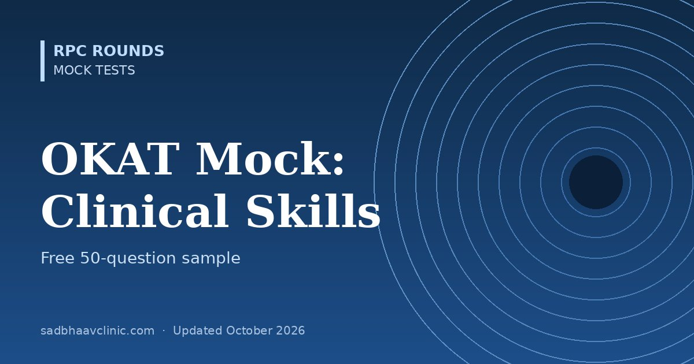

OKAT Mock Test Volume 3: Clinical Skills (Free 50 MCQs)
Last updated: October 2026
A free, timed 50-question mock taken from OKAT Decoded, Volume 3: Clinical Skills. The questions are spread across the book's chapters and mix direct recall, application and advanced items, as in the AIOS-OKAT.
- What it covers: Case vignettes on red eye triage, vision loss, cataract decisions, glaucoma fields and OCT, retinal imaging, uveitis work-up, neuro-ophthalmic localisation, paediatrics and strabismus, cornea, orbit, trauma and data interpretation.
- Format: single best answer from four options, 50 minutes, no negative marking. Practice mode lets you see each answer as you go.
- After you submit: your score, a chapter-by-chapter breakdown, and for every question the explanation, why each wrong option is wrong, and a pearl, exactly as in the book.
Want the full set?
This sample is 50 of the 2,400 questions in Volume 3 (1,800 topic questions arranged by chapter, plus 6 × 100-question full-length mock tests). Your progress is saved in this browser, so you can stop and resume.
Get Volume 3 on Amazon About the series


The OKAT Decoded series
Three volumes that move from the basic sciences, through every clinical subspecialty, to case-based decisions. Every question is original and not taken from any OKAT paper.
Other free samples: Volume 1 sample · Volume 2 sample. More practice: NEET-PG, DNB/MS, FRCOphth/ICO, OKAP mocks, and the AIOS-OKAT exam guide.
Independent study material. Not affiliated with, endorsed by, or connected to the All India Ophthalmological Society (AIOS). "OKAT" is used only to identify the examination.
📘 Want more exam-ready material? See Most Commons in Ophthalmology on Kindle, or browse all my books.
Looking for an eye specialist in Ahmedabad? Learn about our Eye Department or book a consultation with Dr. Dhaval Patel.